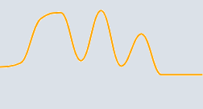

<mat-card class="example-card" style="background-color: #DBE1E8">
    <mat-card-header style="background-color: #DBE1E8; flex: 1 1 auto;">
        <mat-card-title style="color: rgba(80, 167, 46, 0.72); font-size: 30px">26.3°C</mat-card-title>
        <div fxFlex></div>
        
    </mat-card-header>
    
    <mat-card-content style="background-color: #C0CCDA">
        <h2 style="color: #47525E; text-align: left">Temperatura Ambiente</h2>
        <h4 style="color: #8492A6; text-align: left">Sensor No. 1</h4>
    </mat-card-content>
</mat-card>